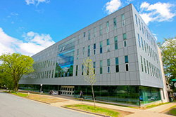
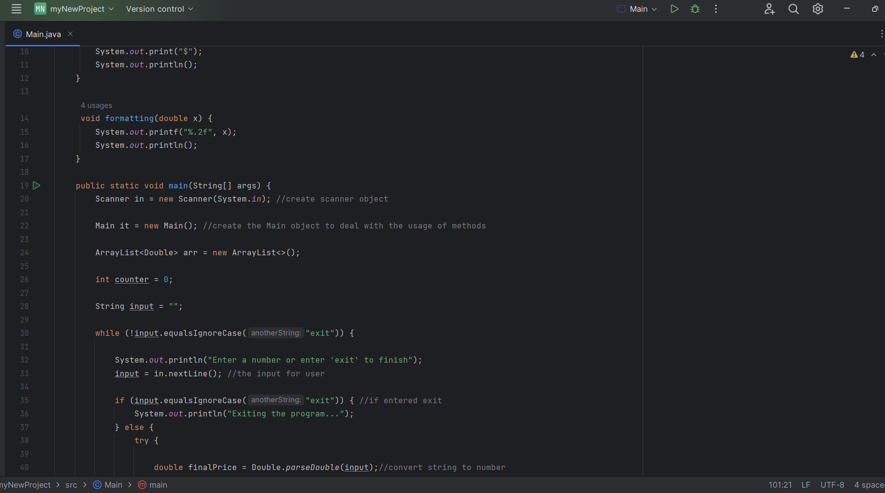
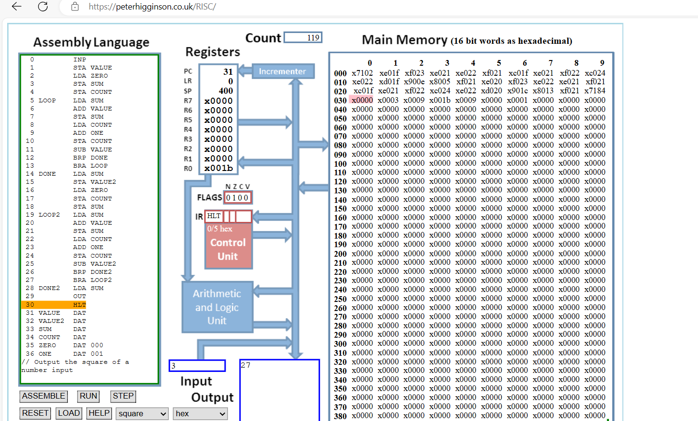
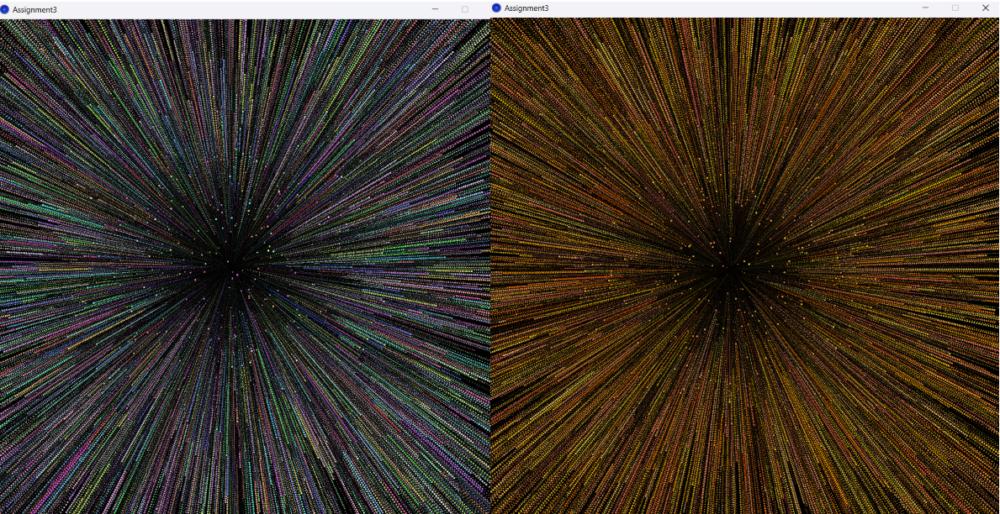
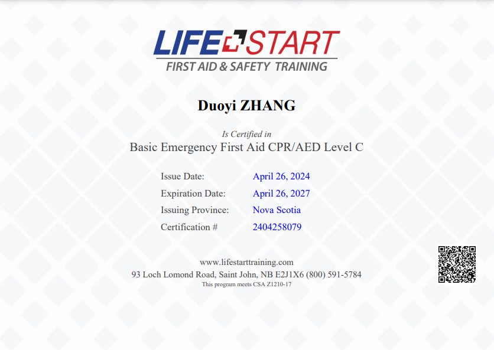

Menu
Current: Dalhousie University
-September 2023 - Present
As a computer science student at Dalhousie University, I'm excited to delve deeper into the world of programming, algorithms, machine learning and software development. I'm eager to explore new ideas, tackle challenges, and gain the skills I need to make a positive impact in the world of technology.
-See more about Dalhousie visite www.dal.ca
Although my interests in machine learning, software development, and other advanced technologies drive my academic aspirations, I recognize that as a first-year student, I'm still navigating the foundations of computer science. Embracing this journey, I dedicate myself to mastering various programming languages and delving into the intricate workings of computers
IDE That I Have Worked With
|
/Programming Language I Know
|
Although I am only in my first year of studies, I have already embarked on several projects, both as assignments and personal endeavors. While some projects were assigned by my professors, others were born from my own curiosity and passion for exploring new technologies. These projects have provided invaluable opportunities for me to apply theoretical knowledge gained in the classroom to real-world scenarios, honing my problem-solving skills and deepening my understanding of programming concepts.
Work I've done using CS
|
In this Java program, I've used nested if-else statement inside loop to calculate the price after the tax is applied rounding it to 2 decimal places using nested if-else statement to deal with user inputs, then I have them printed out using ArrayList and give the user to remove the history of their choice. |
 |
|
Using the Little Man Computer (LMC) to perform the calculation of X^3 in assembly language showcases a mastery of fundamental computer science principles and problem-solving skills. This task requires breaking down the complex mathematical operation of exponentiation into simple, executable instructions that the LMC can understand and execute. |
 |
|
Utilizing Processing 4, I ventured into the realm of creative programming beyond the confines of my formal education. Inspired by the beauty of fireworks, I embarked on a journey to simulate the mesmerizing spectacle using a particle system—a task that pushed the boundaries of my programming skills and ignited my imagination. |
 |
Certificates
|
I'm excited to share that I've recently obtained my Emergency First Aid CPR/AED Level C certification! This certification equips me with the knowledge and skills needed to respond effectively in emergency situations, including assessing and providing immediate assistance to individuals experiencing medical emergencies or cardiac arrest. |
|  |